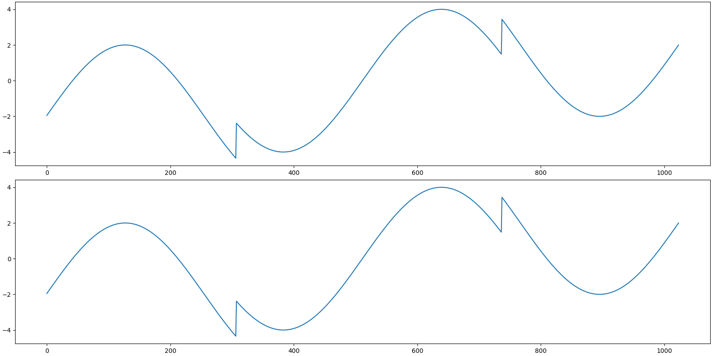

Note
Click here to download the full example code
HeaviSine Signal in Fourier-HeaviSide Basis¶
A HeaviSine signal as proposed by Donoho et al. in Wavelab [BD95] is a sign wave with jump discontinuities. It is not sparse in standard (dirac) basis. It also doesn’t have a sparse representation in the Fourier basis. However, it does have a sparse representation in the Fourier-Heaviside dictionary.
In this example, we will generate a test problem of HeaviSine signal and construct its sparse representation through various algorithms.
The dictionary is a concatenation of the (orthonormal) Fourier basis and a (non-orthogonal) HeaviSide basis.
HeaviSide basis is derived from the HeaviSide step function. In its finite dimensional discrete form it looks like an \(n \times n\) matrix that has ones below and on the diagonal and zeros elsewhere. In other words, all the elements above the diagonal are zero and rest are one.
Typical sparse reconstruction algorithms assume that
the atoms in a sparsifying dictionary have unit norms.
We provide both the unnormalized (with one in lower triangular
part) and normalized versions of the HeaviSide basis
in cr.sparse.lop module.
In this example, we shall use the normalized HeaviSide
basis.
Since the dictionary contains a Fourier basis, hence the representation of the HeaviSine signal in this dictionary is a complex valued representation. The signal itself however is real.
See also:
# Configure JAX to work with 64-bit floating point precision.
from jax.config import config
config.update("jax_enable_x64", True)
import jax.numpy as jnp
import cr.nimble as crn
Setup¶
We shall construct our test signal and dictionary using our test problems module.
Let us access the relevant parts of our test problem
# The sparsifying basis linear operator
A = prob.A
# The HeaviSine signal
b0 = prob.b
# The sparse representation of the HeaviSide signal in the dictionary
x0 = prob.x
Check how many coefficients in the sparse representation are sufficient to capture 99.9% of the energy of the signal
print(crn.num_largest_coeffs_for_energy_percent(x0, 99.9))
Out:
5
Sparse Recovery using Subspace Pursuit¶
We shall use subspace pursuit to reconstruct the signal.
import cr.sparse.pursuit.sp as sp
# We will try to estimate a 10-sparse representation
sol = sp.solve(prob.A, prob.b, 10)
print(sol)
Out:
iterations 4
m=1024, n=2048, k=10
r_norm 1.197336e-13
x_norm 1.193985e+02
The sparse representation estimated by subspace pursuit
x = sol.x
Let us reconstruct the signal from this sparse representation
b = prob.reconstruct(x)
Check if we could reconstruct the sparse representation correctly
print(f'Model Space SNR: {crn.signal_noise_ratio(x0, x)} dB')
Out:
Model Space SNR: 9.00964214358558 dB
The SNR between the expected sparse representation and the recovered sparse representation is low. HeaviSide basis is highly correlated (high coherence). Hence, we couldn’t make the exact recovery of the original sparse representation. Nevertheless we indeed recovered a good sparse representation since the residual norm is very small
Check if we could reconstruct the signal correctly
print(f'Signal Space SNR: {crn.signal_noise_ratio(b0, b)} dB')
Out:
Signal Space SNR: 297.02579164263756 dB
The reconstruction is indeed excellent.
Let us visualize the original and reconstructed signal
Out:
[<matplotlib.lines.Line2D object at 0x000002894D5D3EE0>]
Sparse Recovery using SPGL1¶
import cr.sparse.cvx.spgl1 as crspgl1
options = crspgl1.SPGL1Options(max_iters=2000)
sol = crspgl1.solve_bp_jit(A, b0, options=options)
problems.analyze_solution(prob, sol)
Out:
m: 1024, n: 2048
b_norm: original: 75.465 reconstruction: 75.465 SNR: 118.22 dB
x_norm: original: 127.687 reconstruction: 73.072 SNR: 2.35 dB
Sparsity: original: 5, reconstructed: 226, overlap: 4, ratio: 0.017699115044247787
Iterations: 1609 n_times: 2841, n_trans: 1610
The estimated sparse representation
x = sol.x
Let us reconstruct the signal from this sparse representation
b = prob.reconstruct(x)
Let us visualize the original and reconstructed signal
Out:
[<matplotlib.lines.Line2D object at 0x000002893E424730>]

Comments¶
Subspace Pursuit converges very fast in 4 iterations.
SPGL1 takes 1600+ iterations to converge. Still it is inaccurate.
The HeaviSide basis is highly coherent. It doesn’t satisfy RIP guarantees.
Total running time of the script: ( 0 minutes 8.800 seconds)
Download Python source code: 0001.pyDownload Jupyter notebook: 0001.ipynbGallery generated by Sphinx-Gallery